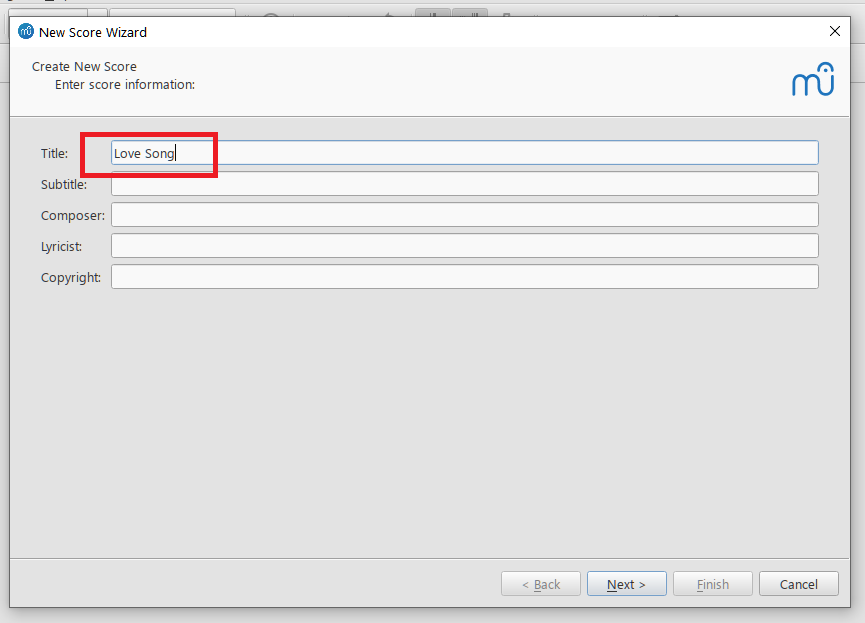
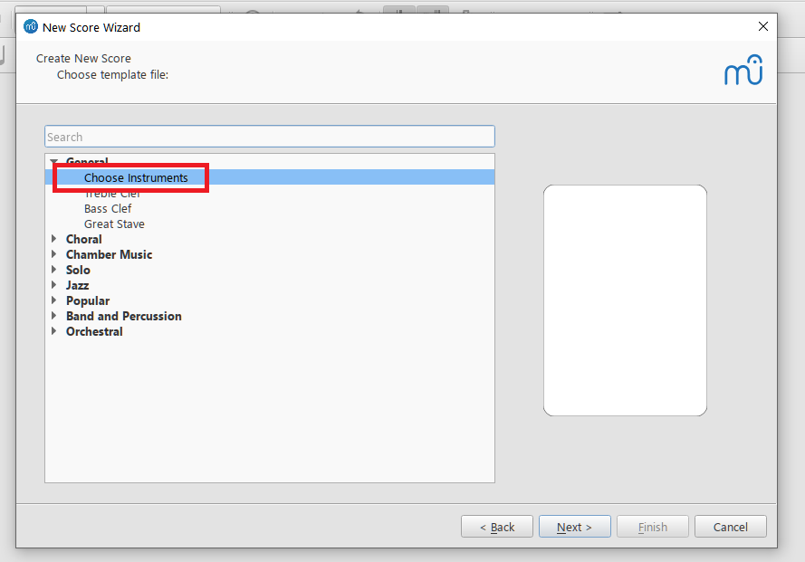
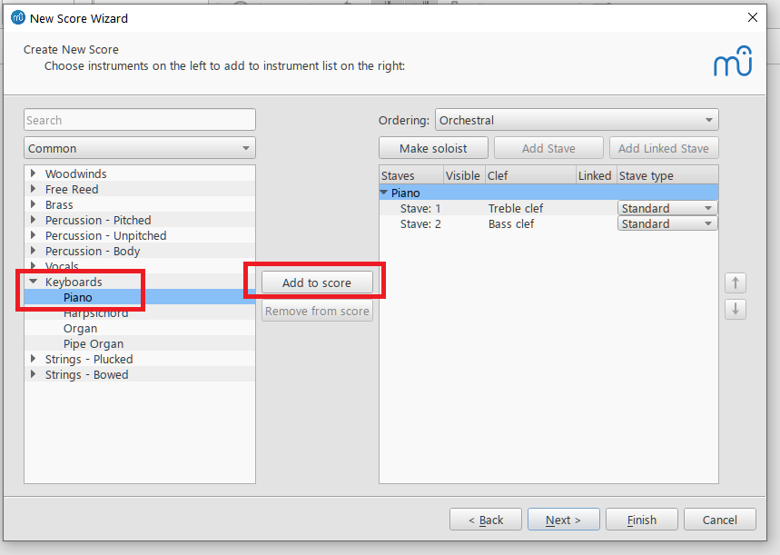
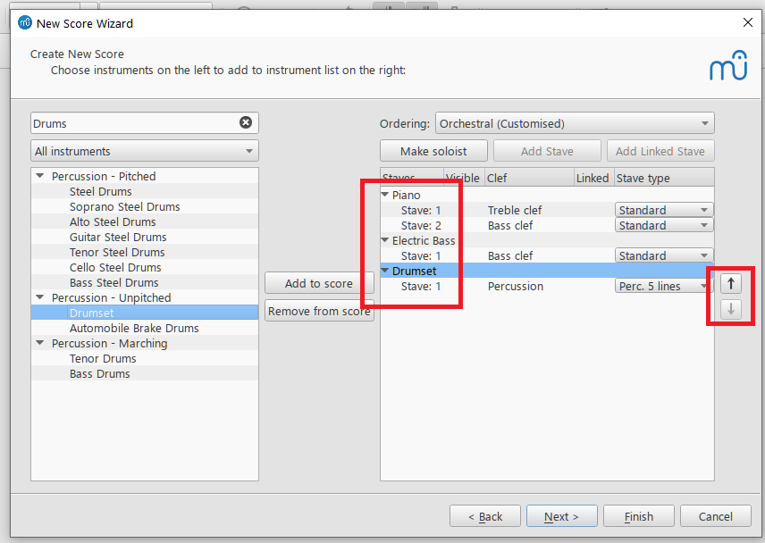
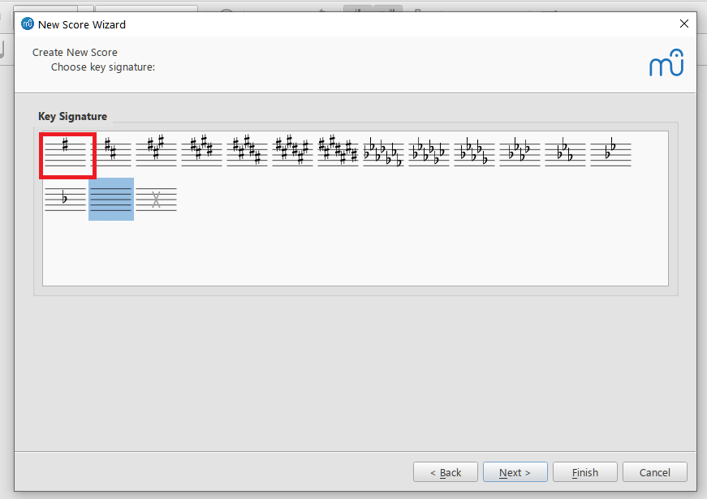
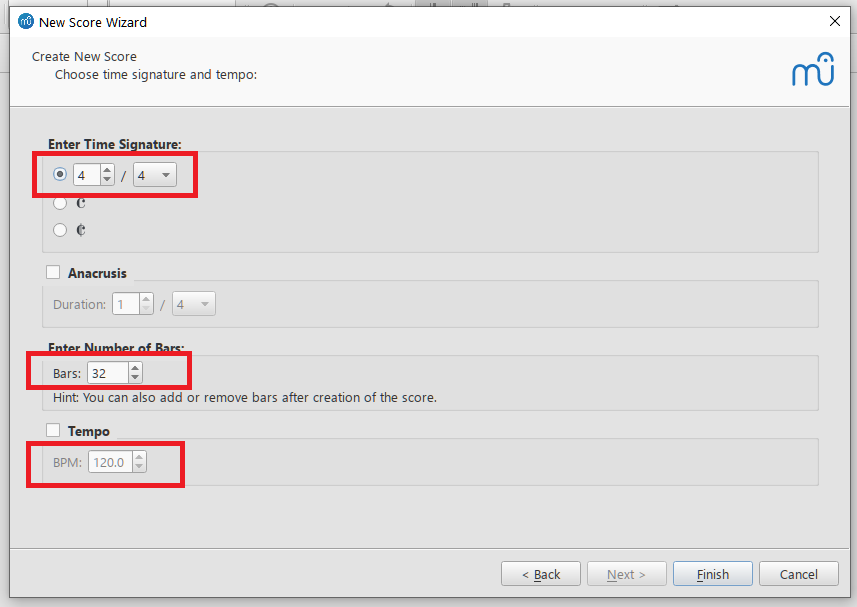
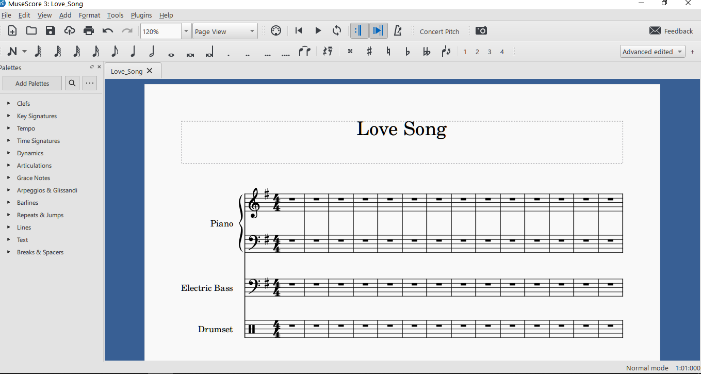

Applies to MuseScore 3.6.2. The menus in MuseScore 4 are different.
In this topic, you create a blank score for a small band (piano, electric bass, and drums) with the New Score wizard. The finished score is available as a sample: Love_Song.mscz.
Before you start, download and install MuseScore 3.6.2 (see MuseScore Music Notation App).
Start MuseScore.
Select File > New.
The New Score Wizard opens:

Enter the text that should appear on the score, such as Title, Composer, and Copyright. In this example, the title is “Love Song”. Click Next.
In the next screen, double-click Choose Instruments.

A list of instruments appears in the left pane.
Expand Keyboards, select Piano, and click Add to score (or double-click Piano).

Piano appears in the right pane.
Add Electric Bass and Drumset the same way.
The right pane now lists all three instruments:

To change the order of the instruments on the score, use the arrow buttons to the right of the list.
Click Next.
Choose a key signature. This example uses E minor, which has one sharp.

Click Next.
On the last screen of the wizard, you can set the time signature, the number of measures, and the tempo. Keep the defaults.

Click Finish.
The wizard closes and the new score opens:

Select File > Save to save the score.
MuseScore suggests a file name based on the title, with spaces
replaced by underscores. In this example, the file name is
Love_Song.mscz.
Note: To change the page size, select Format > Page Settings and choose a size from the Page Size list.
Warning: A
.msczfile is a compressed (zip) archive. Do not unpack or edit it with other tools. If you do, MuseScore may report the file as corrupt.
You can now enter notes. Continue with Creating a music part.